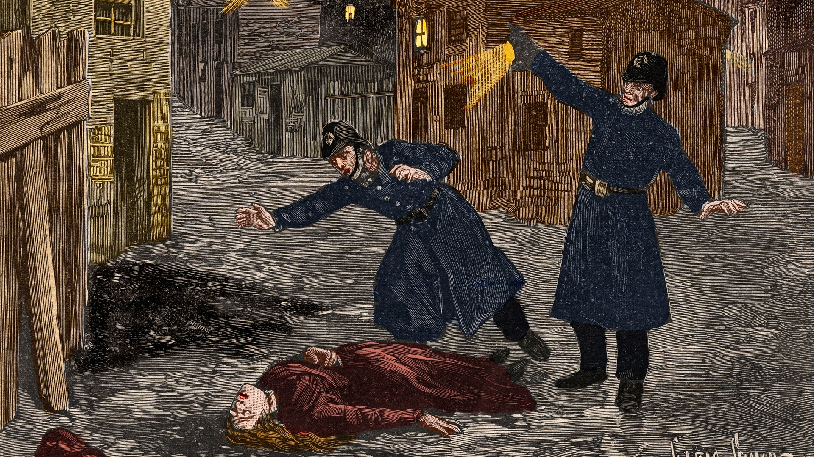
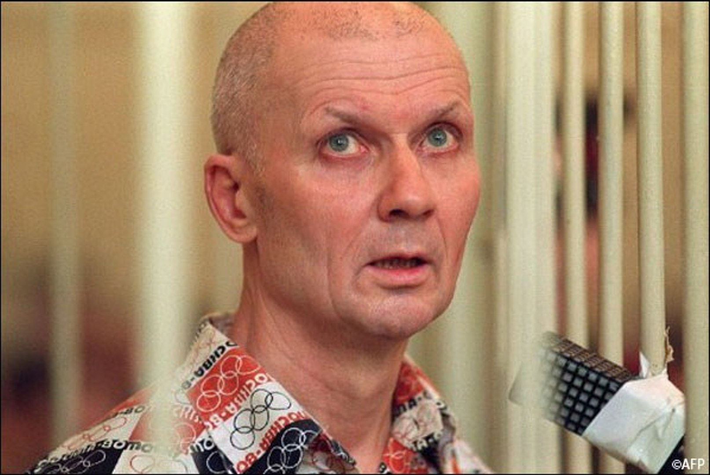
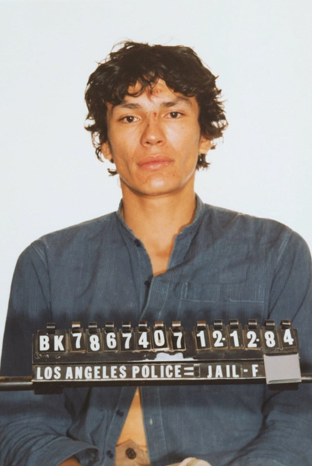

10 Most Notorious Male Serial Killers
The world has known many serial killers. The list of such people who have committed inhumane crimes is endless. But then there are some who have actually stolen the spotlight for the hideous crimes committed against humanity. Here are 10 most evil and notorious Male serial killers the world has ever seen:
The Zodiac Killer
- One of the famous Serial Killers. The killer fashioned this name for himself in taunting letters he sent to the Bay Area Press. He left ciphers to be decoded and out of the four he sent, only one was definitely solved. The killer operated in California in the late 1960s and early 1970s. His last letter said: Me- 37 and SFPD (San Francisco Police Dept.)- 0. He claimed to have killed 37 victims but the newspapers confirmed only 7. The case file is still open.

Henry Gaskins: The Hitchhikers’ Killer
- Gaskins has claimed to have killed between 80 to 90 people by torturing and mutilating them. He started killing in 1969, picking up hitchhikers on the coastal highways of the American South. A criminal associate witnessed him killing two young men and confessed to the police. He was sentenced to death which was later turned to life imprisonment without any parole. Gaskins added another murder to his name and became the only man to have ever killed an inmate on death row.

Miyazaki: The Human Dracula
- He is also one of the most famous serial killers. He got more names due to his hideous acts. Some of them were The Otaku Murderer, The Little Girl Murderer or Dracula Miyazaki. The reason for this being that he abducted little girls, killed them and indulged in sexual activities with their corpses. On one occasion, he not only drank the victim’s blood but ate her hand as well. He also preserved body parts as trophies and sent postcards to the families describing the murder. His father committed suicide and Miyazaki was hanged in 2008, aged 45.
Jack the Ripper aka Whitechapel Murder
- Unidentified serial killer active in the impoverished districts in and around Whitechapel in the End of London in 1888. Attacks ascribed to Jack the Ripper typically involved female prost***tes who lived and worked in the slums of the East End of London. The name "Jack the Ripper" originated in a letter written by an individual claiming to be the murderer that was disseminated in the media. The letter is widely believed to have been a hoax and may have been written by journalists to heighten interest in the story and increase their newspapers' circulation. The "From Hell" letter received by George Lusk of the Whitechapel Vigilance Committee came with half of a preserved human kidney, purportedly taken from one of the victims. The public came increasingly to believe in a single serial killer known as Jack the Ripper, mainly because of both the extraordinarily brutal nature of the murders and media coverage of the crimes.

Tedd Bundy: The Crazy Necrophile
- Ted Bundy was an American serial killer, kidnapper, rapist, and necrophile. He operated in various states in the USA and confessed to killing 30 women. He revisited crime scenes and indulged in sexual acts with the corpses. Bundy decapitated at least 12 victims and kept their heads as trophies in his apartment. Aged 42, Bundy died on the electric chair in 1989. His own defence attorney said, “Ted, was the very definition of heartless evil.”

Jeffrey Dahmer: The Milwaukee Cannibal
- Jeffrey Dahmer was responsible for dismembering 17 men and boys between 1978 and 1991. Dahmer also indulged in necrophilia and cooking body parts of his victim, then eating them. He was eventually caught after a prospective victim managed to overpower him. Dahmer was sentenced to 15 terms of life imprisonment in 1992. But he was beaten to death by a fellow prisoner at the Columbia Correctional Institution two years later.
John Wayne Gacy: The Burial King
- Gacy operated between 1972 and 1978 in Chicago, Illinois. He sexually assaulted and murdered 33 teenage boys and young men. Gacy would lure his victims to his home with the promise of work or money before murdering them by strangulation using a tourniquet. He buried 26 of his victims in the crawl space under his house and later disposed the bodies off in the Des Plaines River. Convicted of 33 murders, Gacy was sentenced to death and spent 14 years on death row before he was executed by lethal injection on May 10, 1994.

Andrei Chikatilo: The Butcher
- He was also known as the ‘Chessboard Killer’ and the ‘Bitsa Park Maniac’. His targets were homeless men whom he lured to his house with vodka. He is believed to have killed 49 people, most of them with repeated hammer blows to their heads and inserted a vodka bottle into the gaping skull wound. He initially said he wanted to complete the number of squares on a chessboard and kill 64 people. Also, it is believed that he was in competition with another Russian serial killer, Andrei Chikatilo, who was convicted in 1992 for 53 killings. It was the very same year Alexander started killing.

Richard Ramirez, The Night Stalker
- Richard Ramirez’s murderous rampage in California in the 1980s earned him the reputation as one of the most famous American serial killers. He was arrested in 1985 and was convicted, among other crimes, for the murder of 13 people, for which he never showed any remorse. In 2021, Netflix released a documentary about him featuring first-person interviews, footage, reenactments, and original photos related to the case.

Rodriguez Filho: The Brazilian Maniac
- Arrested in 1973, Pedro was later convicted in 2003 for the murder of at least 71 people and was then sentenced to 128 years imprisonment. He was only 14 when he committed his first killing. He wreaked havoc on local drug dealers, in revenge for his girlfriend’s killing while he was imprisoned. In prison, he even executed his own father, who was also serving time for murder. Filho went onto kill at least 47 inmates while imprisoned. His continued killings have led to his sentence to be increased to 400 years imprisonment.